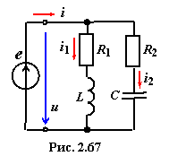

Резонанс токов (РТ) возникает в цепи, содержащей индуктивную катушку с параметрами R1 и L и конденсатор с параметрами R2 и С, размещённые в двух ветвях, подключённых параллельно источнику энергии е(t) с напряжением на зажимах u = Umsinωt (рис. 2.67).
Условием РТ является равенство нулю входной реактивной проводимости цепи, т.е.
bРТ = bL(РТ) − bC(РТ) = 0,(2.111)
где
Откуда резонансная угловая частота
(2.112)
где − резонансная частота в контуре без потерь (R1 = R2 = 0); − характеристическое сопротивление контура.
В частном случае при R2 = 0  , а при ещё более частном случае, когда R2 = 0 и R1 << ωL, резонанс наступает при .
, а при ещё более частном случае, когда R2 = 0 и R1 << ωL, резонанс наступает при .
Поскольку резонансная частота ω действительная и положительная величина,
то при и или и режим резонанса токов невозможен, однако при и или и такой режим возможен.
При не зависит от величины сопротивления R1 = R2, а при R1 = R2 = ρ имеем неопределенность: ωPT = ω0.. Физически это означает, что режим резонанса токов (так называемый «вечный» резонанс) может возникнуть на любой частоте.
Резонансные свойства (добротность, полоса пропускания и др.) цепи с двумя ветвями R1L и R2C (рис. 2.67) удобно изучать применительно к её схеме замещения с тремя параллельно соединёнными ветвями с параметрами g, bL и bC (рис. 2.68а), равными:
,
Добротность параллельного колебательного контура определяется отношением ёмкостной или индуктивной проводимости контура при РТ к его активной проводимости, т.е.
(2.113)
где
Практически добротность Q показывает кратность тока IC(РТ) в ветви с конденсатором (без резистора R2, рис. 2.68б) при режиме РТ над током IPT на зажимах контура, т. е.